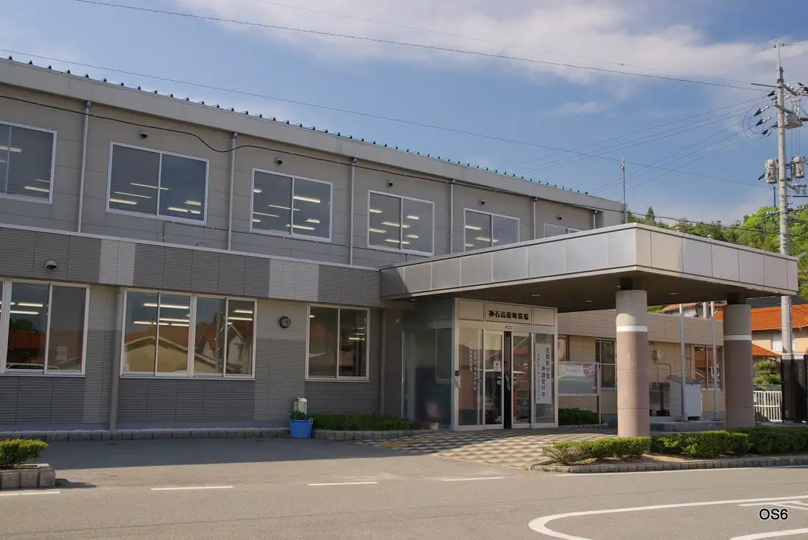

Japan / Hiroshima / Jinseikogen
Jinseikogen
Jinseikogen · Hiroshima
Jinseikogen
Highlighted on the Hiroshima map.

Stay
Mitsunobu Tera Baths
Dining
Nuku Mori
Teiagarutenkafe
Okamibureddo
Mon Hana Tei
Resutoran Taishaku Village
COHAN CAFE
Autumn Leaves Hall
Rotei Harapan
Tenuki Udon
Tamachan
Mori no Hanaya San
Sekka Tei
GARDEN mimuracoffee
Yamazato no Mochi
182CAFE
Noka Kissa
Onsen
Mitsunobu Tera Baths Yukkura Public Bath
Jinseikogen Onsen
Sights
Jinseikogen Teiagaruten
Toyomatsu Kami Hikoki Tawa
Roadside Station Sanwa 182 Suteshon
Taishakukyo Shinryu Mizumi
Taishakukyo Sukora Highlands